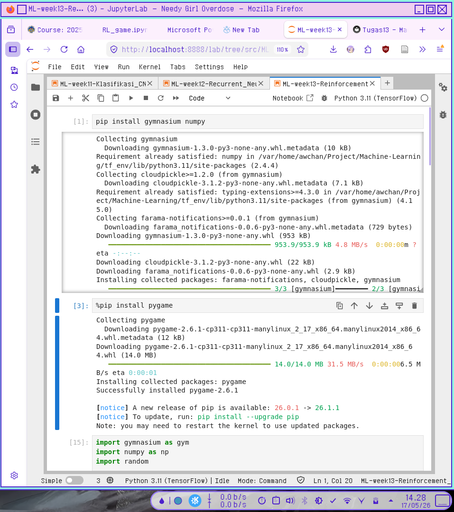
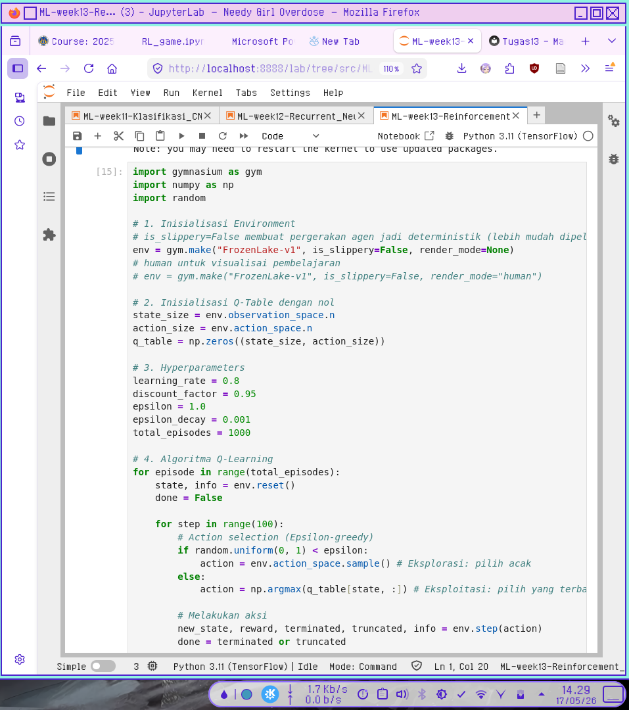
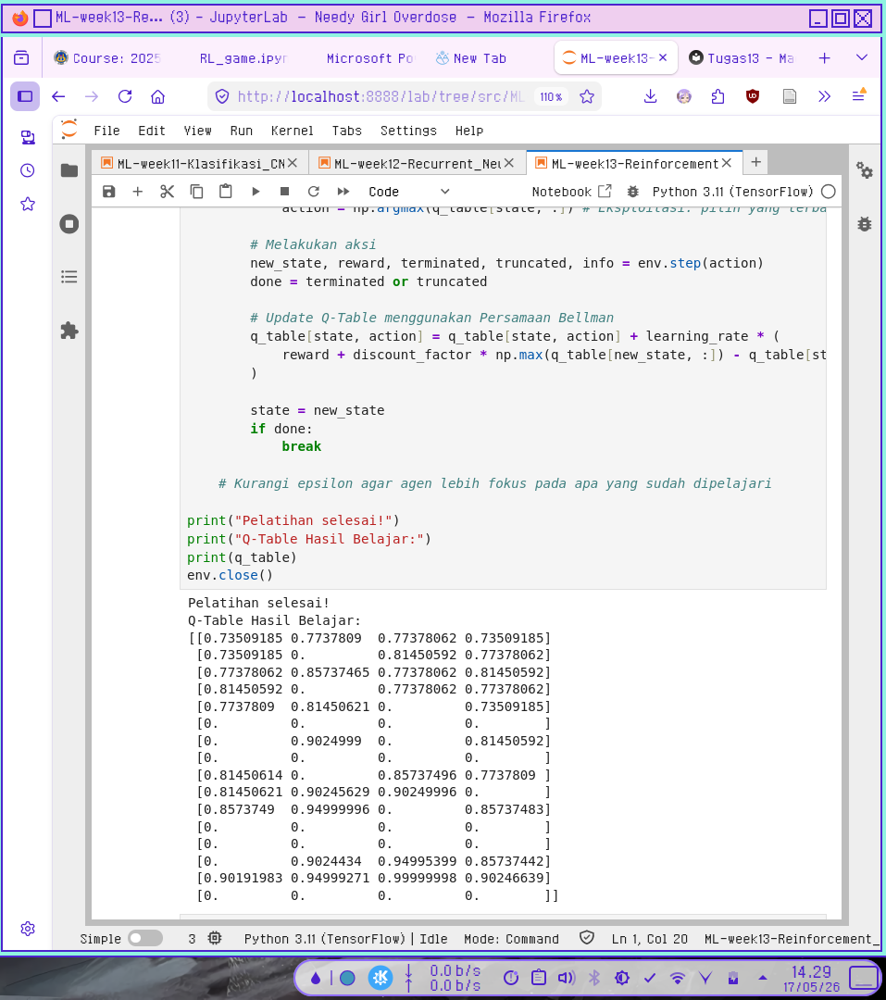
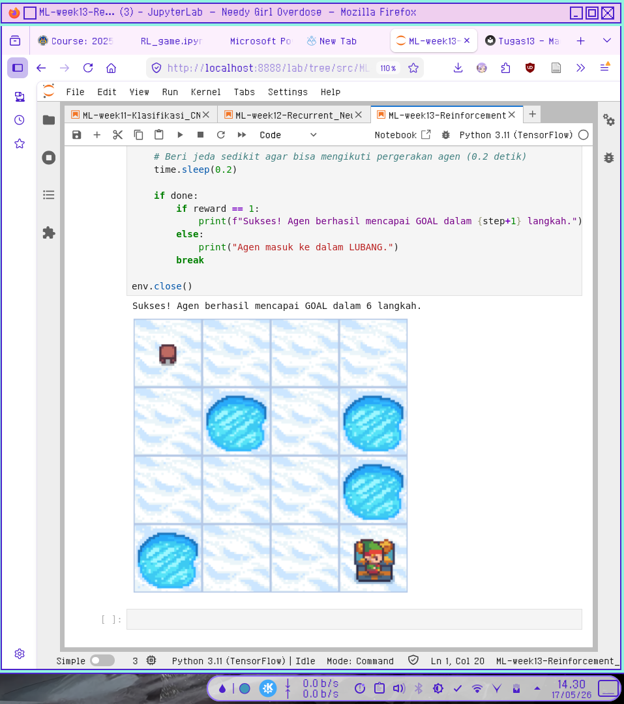

Reinforcement Learning
Referensi hasil output Q-table pada pelatihan saya:
Pelatihan selesai!
Q-Table Hasil Belajar:
[[0.73509185 0.7737809 0.77378062 0.73509185]
[0.73509185 0. 0.81450592 0.77378062]
[0.77378062 0.85737465 0.77378062 0.81450592]
[0.81450592 0. 0.77378062 0.77378062]
[0.7737809 0.81450621 0. 0.73509185]
[0. 0. 0. 0. ]
[0. 0.9024999 0. 0.81450592]
[0. 0. 0. 0. ]
[0.81450614 0. 0.85737496 0.7737809 ]
[0.81450621 0.90245629 0.90249996 0. ]
[0.8573749 0.94999996 0. 0.85737483]
[0. 0. 0. 0. ]
[0. 0. 0. 0. ]
[0. 0.9024434 0.94995399 0.85737442]
[0.90191983 0.94999271 0.99999998 0.90246639]
[0. 0. 0. 0. ]]
Berikut adalah panduan mudah untuk membaca dan memahami isi dari Q-Table tersebut.
1. Memahami Struktur: Baris dan Kolom
Q-Table adalah tabel pencarian (lookup table) di mana agen menyimpan "pengetahuan" yang sudah dipelajarinya.
- Baris (Indeks 0 sampai 15): Menandakan State (State/Posisi) agen di dalam lingkungan. Jika ini adalah grid 4x4, State 0 adalah pojok kiri atas, dan State 15 adalah pojok kanan bawah.
- Kolom (Indeks 0 sampai 3): Menandakan Action (Aksi) yang bisa diambil oleh agen. Standardnya dalam lingkungan gym (seperti Frozen Lake), urutan aksinya adalah:
- Kolom 0: Kiri (Left)
- Kolom 1: Bawah (Down)
- Kolom 2: Kanan (Right)
- Kolom 3: Atas (Up)
2. Arti dari Angka di Dalam Tabel (Q-Value)
Angka-angka di dalam tabel tersebut disebut Q-Value. Angka ini merepresentasikan seberapa keuntungan atau hadiah (reward) masa depan yang diharapkan jika agen mengambil aksi tertentu di state tertentu.
- Semakin besar angkanya, semakin bagus aksi tersebut.
- Angka
0.**berarti agen tidak pernah mendapatkan reward dari sana, atau posisi tersebut adalah Dead End / Lubang (Hole) di mana permainan langsung berakhir sebelum mendapat reward.
3. Cara Membaca Kasus Spesifik (Contoh Analisis)
Mari kita bedah beberapa baris menarik dari tabel:
Contoh 1: State Berisi Lubang atau Goal (Semua 0.)
Perhatikan Baris 5, 7, 11, dan 12:
[0. 0. 0. 0. ]
Semua nilai di baris ini adalah nol. Dalam Frozen Lake, ini menandakan Terminal State. State 5, 7, 11, dan 12 adalah Lubang (Hole). Begitu agen masuk ke sini, game berakhir (nyemplung), sehingga tidak ada aksi lanjutan yang bernilai. Baris 15 juga berisi nol karena itu adalah Goal (Finish), tempat permainan selesai.
Contoh 2: State Mendekati Kemenangan (State 14)
Perhatikan Baris 14 (State tepat di sebelah kiri Goal):
[0.90191983 0.94999271 0.99999998 0.90246639]
- Jika agen bergerak ke Kiri (Kolom 0): Nilainya
0.901 - Jika agen bergerak ke Bawah (Kolom 1): Nilainya
0.949 - Jika agen bergerak ke Kanan (Kolom 2): Nilainya
0.99999998(Hampir sempurna1.0) - Jika agen bergerak ke Atas (Kolom 3): Nilainya
0.902
Dari sini kita tahu, jika agen berada di State 14, aksi terbaiknya adalah Kanan karena nilai Q-nya paling tinggi. Dan benar saja, di sebelah kanan State 14 adalah State 15 (Goal)!
4. Cara Agen Menggunakan Tabel Ini (Kebijakan / Policy)
Setelah pelatihan selesai, agen tidak lagi menjelajah secara acak. Agen akan menggunakan mode Eksploitasi (Exploitation) dengan prinsip Argmax (mencari indeks kolom dengan nilai tertinggi di baris tersebut).
Mari kita petakan jalan pintas (Policy) yang dipelajari agen Anda dari State awal (0) menuju Goal (15):
| State (Baris) | Q-Values | Aksi Terbaik (Nilai Tertinggi) |
|---|---|---|
| State 0 | [0.735, 0.7737809, 0.77378062, 0.735] |
Bawah (Indeks 1: 0.7737809) |
| State 4 | [0.773, 0.81450621, 0., 0.735] |
Bawah (Indeks 1: 0.81450621) |
| State 8 | [0.814, 0., 0.85737496, 0.773] |
Kanan (Indeks 2: 0.85737496) |
| State 9 | [0.814, 0.90245629, 0.90249996, 0.] |
Kanan (Indeks 2: 0.90249996) |
| State 10 | [0.857, 0.94999996, 0., 0.857] |
Bawah (Indeks 1: 0.94999996) |
| State 14 | [0.901, 0.949, 0.99999998, 0.902] |
Kanan (Indeks 2: 0.99999998) |
| State 15 | [0., 0., 0., 0.] |
GOAL! |
Screenshot Kode Python



